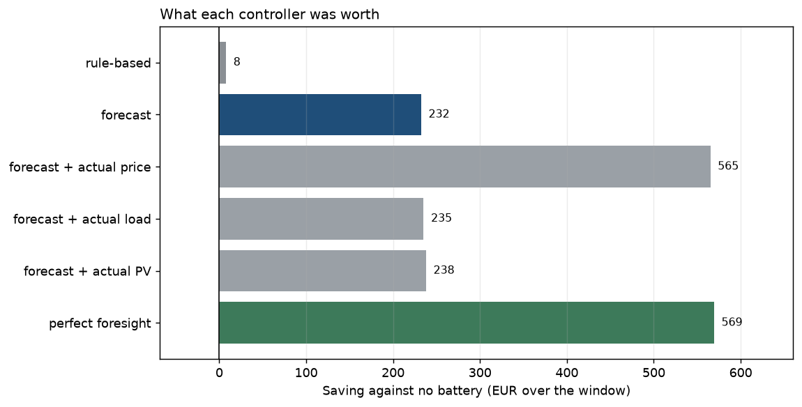

Energy storage · Machine learning
Forecast-driven battery dispatch
ML forecasts of load, solar and wholesale price drive a battery schedule optimized in Pyomo, tested on 60 days of real German/Luxembourg market data.
98.7%of the remaining gap traced to price error alone, showing exactly where forecasting effort pays off
PythonPyomoscikit-learnTime seriesHiGHS
View project